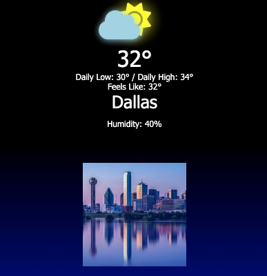

Vanilla JS Music Player
Reasoning
The reason why I decided to create this Vanilla JS Music Player is because so that I can display my UI skills, along with proper DOM control
Stack
The stack that I used to create this project is HTML5, CSS and Vanilla Javascript. The reason why I chose this stack is because I wanted to show that you can create effective applications with this stack alone. Some of the challenges that I faced had to do with finding ways to allow the user to play, pause and change songs when needed.
Lessons
I learned a few things from creating this project. One thing I learned is how to use functions and event listeners to allow the user to play, pause and change songs when needed. Another lesson I learned is how to use animations properly when it comes to the playing and pausing the music.